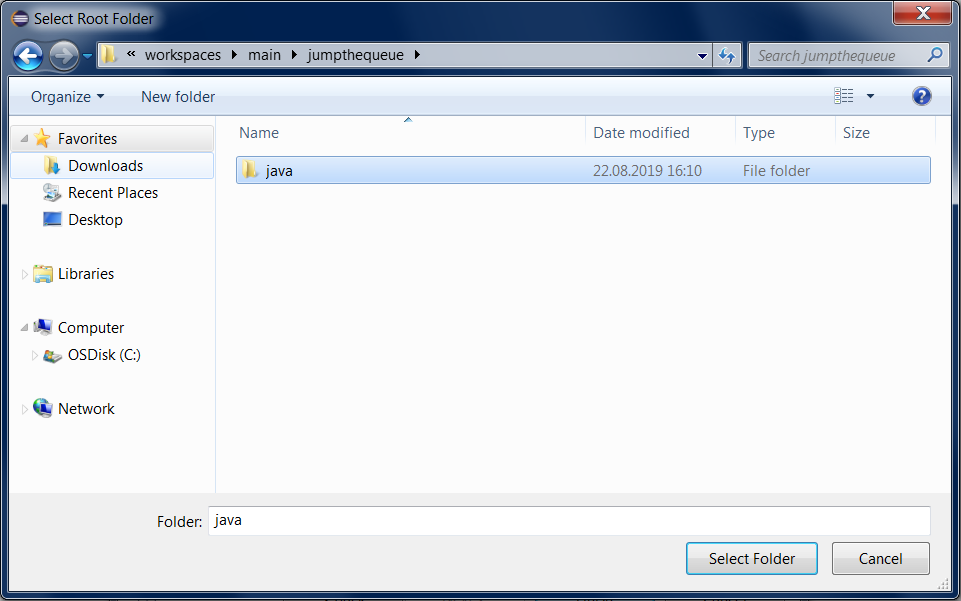
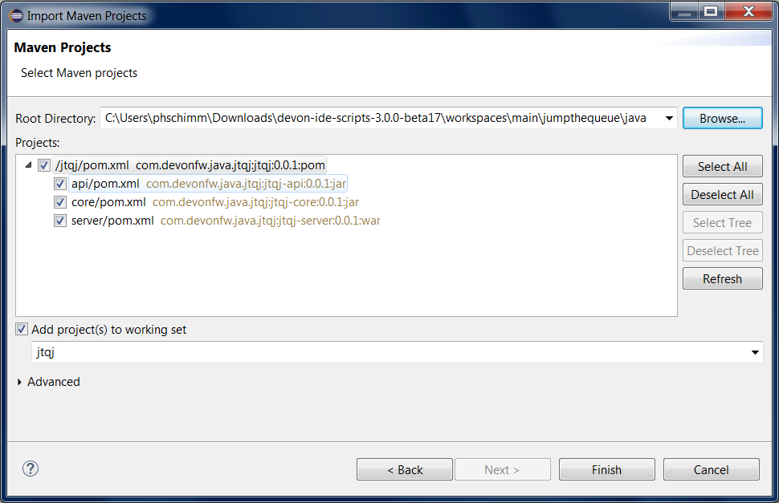

Build your own devon4j Application
In this step we are going to create our work environment and establish the first part of our back-end. Like most devonfw projects, our back-end will be build in Java and thus utilize the tools, libraries and frameworks provided by the devon4j stack.
Setting up a devonfw Work Environment
Follow the setup instructions listed here.
After you have done so, your working directory should look like this:
Press "Shift + Right Click" and select "Open Devon CMD shell here".
Your shell should now show the message:
devon IDE environment variables have been set for C:\... in workspace main
Navigate into workspace "main" by entering:
C:\...> cd workspaces\main
Creating the Project
Now we are going to create the folder structure for our back-end by running the following commands:
C:\...\workspaces\main> mkdir jumpthequeue C:\...\workspaces\main> cd jumpthequeue C:\...\workspaces\main\jumpthequeue> mkdir java C:\...\workspaces\main\jumpthequeue> cd java C:\...\workspaces\main\jumpthequeue\java>
Here we are going to generate our devon4j application template as a starting point for our back-end:
C:\...\workspaces\main\jumpthequeue\java>
devon java create com.devonfw.application.jtqj com.devonfw.java.jtqj -Dversion=0.0.1
==
We are using the java commandlet of the devon IDE. After the command create we are passing the arguments package, groupId and version in this case.
== ==
==
Be sure that you are using devonfw CMD or bash, as the command is not working properly with devonfw PowerShell. == ==
Once you see the BUILD SUCCESS message, the new app template has been created and can now be expanded.
Importing the Application in Eclipse
First we have to launch our project-specific Eclipse instance by executing the eclipse-main.bat script in the root folder. Now we can import our application into Eclipse:
Select Import projects… from the Package Explorer (or optionally Import… via the File menu).
Select Existing Maven Projects and click Next >.
Now click Browse and select the java folder inside our jumpthequeue project.
 
Eclipse will detect the pre-generated Maven project structure inside our project by looking for pom.xml files.
In our case it should find the api, core and server packages.
Finally click Finish and wait for the import to complete.
Preparing the Back-end for an Initial Launch
Before test-launching our back-end we have to change the server context path of our application. Via the Eclipse Package Explorer navigate to:
/jtqj-core/src/main/resources/config/
Now open application.properties and update the following line of code:
server.servlet.context-path=/jumpthequeue
==
For a more manageable view of the package structure inside the Eclipse Package Explorer select Package Presentation > Hierarchical from the small dropdown-menu.
Launching the Back-end
Finally, using Spring Boot (which provides us with an embedded Tomcat server), we can run the back-end of our app in one easy step. Navigate to:
/jtqj-core/src/main/java/com.devonfw.application.jtqj/
Now right click SpringBootApp.java select Run As > Java Application.
If you did everything right up until now the console should show a message like this:
. ____ _ __ _ _ /\\ / ___'_ __ _ _(_)_ __ __ _ \ \ \ \ ( ( )\___ | '_ | '_| | '_ \/ _` | \ \ \ \ \\/ ___)| |_)| | | | | || (_| | ) ) ) ) ' |____| .__|_| |_|_| |_\__, | / / / / == == == == =|_|== == == == == == == |___/=/_/_/_/ :: Spring Boot :: (vX.X.X.RELEASE) . . . ... c.d.application.jtqj.SpringBootApp : Starting SpringBootApp on XXXXXXX with PID XXXX ... o.s.b.w.embedded.tomcat.TomcatWebServer : Tomcat started on port(s): 8081 (http) with context path '/jumpthequeue' ... c.d.application.jtqj.SpringBootApp : Started SpringBootApp in XX.XXX seconds (JVM running for XX.XXX)
The back-end is now accessible via localhost:8081/jumpthequeue.
You can view the exposed services by logging in with these credentials:
Username: admin Password: admin
==
You are redirected to a login screen because — by default — a new devon4j applications provides a basic security setup. == ==
Structure of the App Template
When creating devon4j based apps this way, we get the following features out-of-the-box:
-
Maven project with api project, core project and server project:
-
api project for the common API
-
core project for the app implementation
-
server project ready to package the app for deployment
-
-
Data base ready environment with an h2 instance, including:
-
Data model schema
-
Mock data schema
-
-
Database version control with Flyway
-
Bean Mapper ready
-
Basic security enabled (based on Spring Security)
-
Unit test support and model
Next Chapter: Add a Component to your App